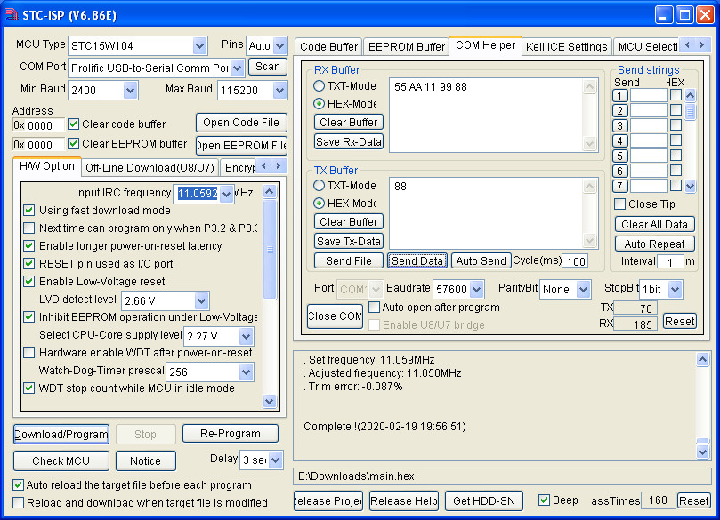

微處理器 - STCmicro STC15W104 - Assembly - UART RX(57600bps)
參考資訊：
http://plit.de/asem-51/
http://www.stcisp.com/stcisp620_off.html
https://sourceforge.net/projects/mcu8051ide/
https://www.solitontech.com/uart-protocol-validation-service/
由於STC15W104沒有UART功能，因此，司徒目前使用I/O方式製作UART RX功能，使用的方式為輪詢UART RX腳位，格式為：57600bps N,8,1，使用的振盪器為RC 11.0592MHz，過程說明如下
UART傳輸協定

57600bps每個bit時間為：1/57600 = 17.361us
main.s
uart_rx .equ p3.0
uart_tx .equ p3.1
.org 0h
jmp _start
.org 100h
_start:
setb uart_tx
main:
call uart_recv_byte
call uart_send_byte
jmp main
; 57600,N,8,1
; RC 11.0592MHz
uart_send_byte:
mov r0, #8
clr uart_tx
mov r1, #44
djnz r1, $
u0:
rrc a
jc u1
clr uart_tx
sjmp u2
u1:
setb uart_tx
u2:
mov r1, #44
djnz r1, $
djnz r0, u0
setb uart_tx
mov r1, #44
djnz r1, $
ret
; 57600,N,8,1
; RC 11.0592MHz
uart_recv_byte:
clr a
mov r0, #8
u3:
jb uart_rx, u3
mov r1, #72
djnz r1, $
u4:
mov c, uart_rx
rrc a
mov r1, #44
djnz r1, $
djnz r0, u4
ret
.end
編譯
$ mcu8051ide --compile main.s
完成
